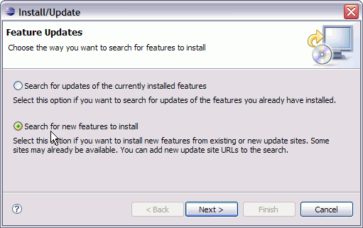
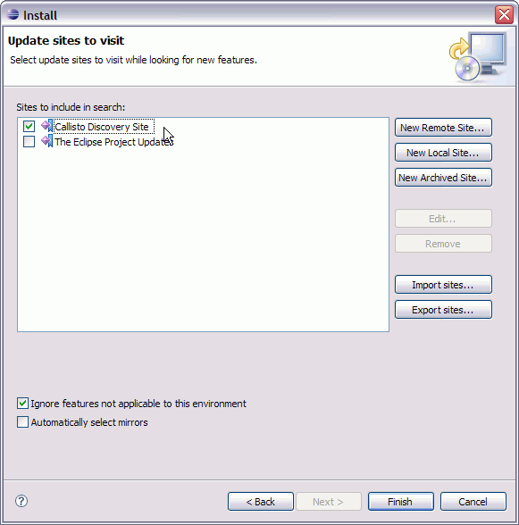
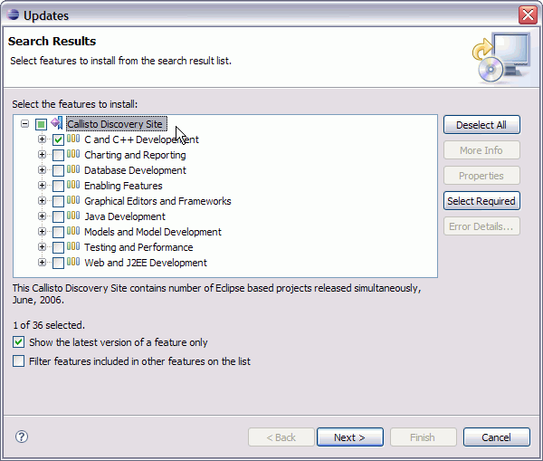

Under the Second "Download now" link click on the smaller "Other downloads for 3.2.2."
On the next page scroll down to the heading "Platform Runtime Binary" and download the tar (or zip) file for your platform. This is about 1/3 to 1/4 the size of the full SDK, and doesn't include the Java or Eclipse Plug-in development parts, which I assume you don't need. The UI is simpler since you don't have all those additional options.
The Eclipse SDK works just fine, though, if you prefer that.
- Help > Software Updates > Find and Install...

- Select "Search for new features to install",
 - Click Next, Select "Callisto Discovery Site" and click "Finish."
(The Callisto discovery site lists Eclipse plug-ins guarateed to work with the 3.2 version of Eclipse.)
 - When the Callisto Update site is loaded you see another Dialog.
Expand the "Callisto Discovery Site" item and check the "C and C++ Development" item.
 - Click Next, accept the license terms, Click Next, and click Finish.
- On the Verification page, click "Install All."
- When it's done, click "Yes" to restart the Eclipse workbench. Or click "no" and close it down to install PTP.